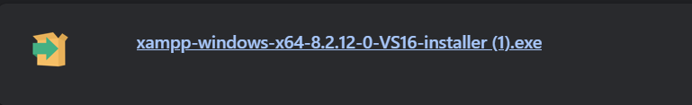
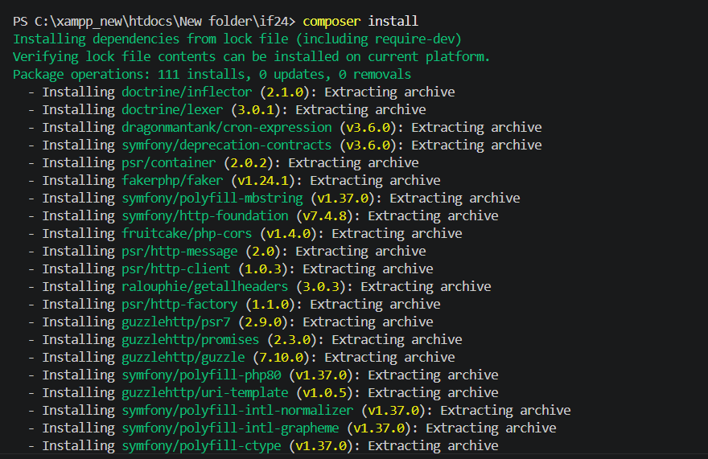
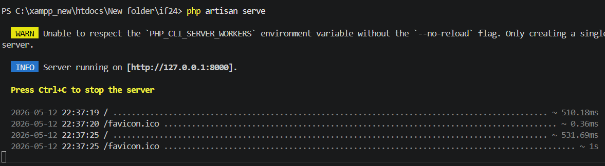
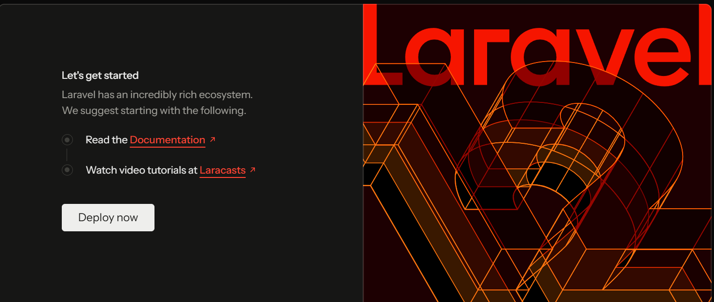
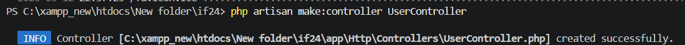
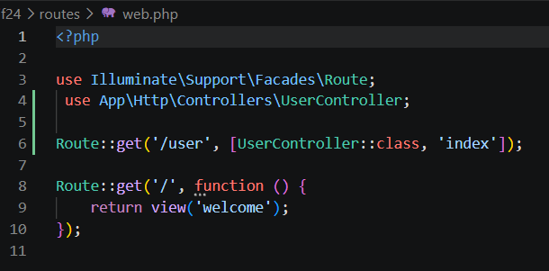
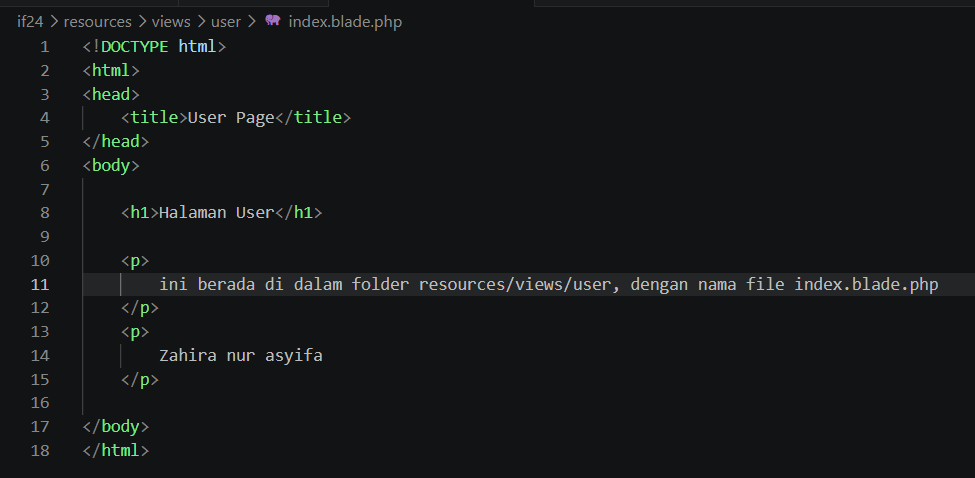
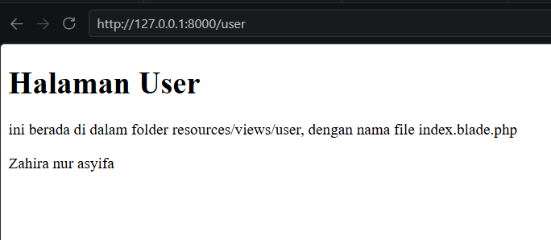

Pada praktikum ini dilakukan proses instalasi dan pengenalan framework Laravel. Laravel merupakan framework PHP berbasis MVC yang digunakan untuk membangun aplikasi web.

XAMPP digunakan sebagai web server lokal untuk menjalankan project Laravel.

Composer digunakan untuk mengelola dependency pada Laravel.
composer create-project laravel/laravel project-laravel
Perintah tersebut digunakan untuk membuat project Laravel baru.

Setelah perintah dijalankan, Laravel akan berjalan pada localhost. Klik link http://127.0.0.1:8000 yang diberikan untuk melihat halaman utama Laravel.


Perintah tersebut digunakan untuk membuat controller baru bernama UserController. Controller digunakan untuk mengatur logika aplikasi dan menghubungkan model dengan view.

Routing dibuat pada file routes/web.php untuk menghubungkan URL dengan controller. Pada contoh ini, route /user akan memanggil method index pada UserController.

View dibuat pada: resources/views/user/index.blade.php untuk menampilkan halaman user. Blade adalah template engine yang digunakan oleh Laravel untuk membuat tampilan yang dinamis.

Halaman berhasil ditampilkan pada route /user.
Praktikum ini memberikan pemahaman tentang instalasi dan penggunaan dasar Laravel. Dengan mengikuti langkah-langkah praktikum, saya dapat menjalankan project Laravel dan membuat route sederhana untuk menampilkan halaman user.
Lihat Repository GitHub